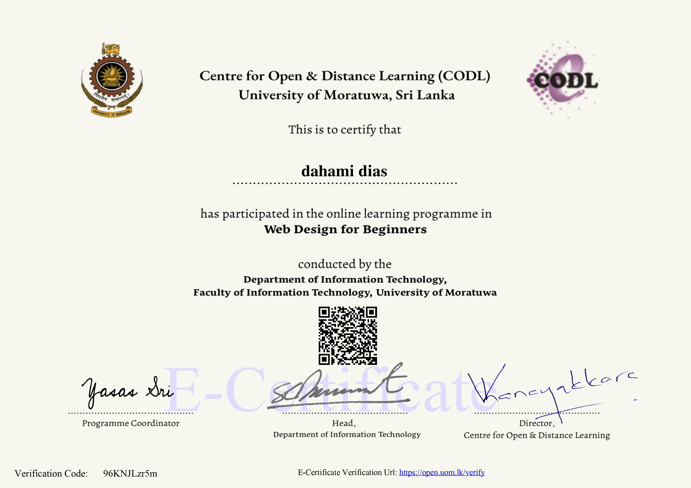

Certificates

C Programming

Java Programming

Web Design
| Undergraduate - BSc (Hons) In Information Technology and Management |
| Faculty of IT | University of Moratuwa |
Hello! I'm Athaudage Dahami Ayodya Dias, an enthusiastic tech student and undergraduate at the University of Moratuwa, with a passion for turning ideas into interactive, user-focused digital experiences. I'm currently diving deep into Fullstack Web Development, Mobile Application Development, and the fascinating world of IoT. This website marks my very first step into building a personal online presence crafted entirely with HTML, CSS, and JavaScript. I thrive on creating smart, hands-on projects that solve real-world problems creatively and efficiently. Whether it's building responsive web applications or tinkering with IoT prototypes, I enjoy every bit of the problem-solving journey. Right now, I'm expanding my knowledge in UI/UX Design and Database Management with MongoDB, eager to grow into a versatile and impact-driven developer.
foundation of web pages
Designing stylish UIs.
Interactive features.
Modern UI library.
Version control tools.
Data management.
C Programming
Java Programming
Web Design